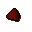
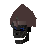

Lump of crystal

| Config name | heartcrystal_sectionc |
| Item id | 743 |
| Weight | 50g |
| Members | Yes |
| Tradeable | No |
| Stackable | No |
| Defined in | scripts/quests/quest_legends/configs/quest_legends.obj |
Lump of crystal
It looks like it's been snapped off of something.
Dropped by
| NPC | Level | Quantity | Rarity | Via | Notes |
|---|---|---|---|---|---|
 Ranalph Devere | 92 | 1 | Always | if %legendsquest < ^legends_heart_in_recess if ~obj_gettotal(heartcrystal_sectionc) = 0 if ~obj_gettotal(heartcrystal) = 0 if ~obj_gettotal(heartcrystal_glow) = 0 if testbit(%legends_bits, ^legends_smelting_lump) = ^false given directly |
Quests
Referenced in scripts
scripts/quests/quest_legends/scripts/legends_journal.rs2scripts/quests/quest_legends/scripts/quest_legends.rs2scripts/quests/quest_legends/scripts/ranalph_devere.rs2